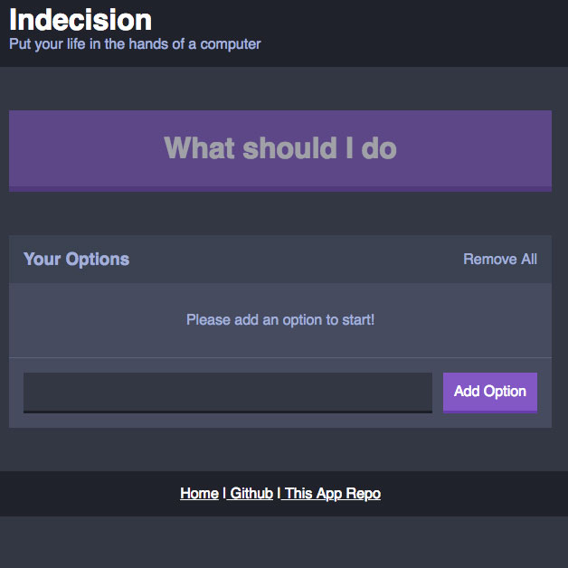
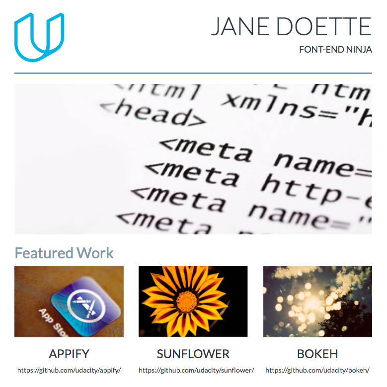
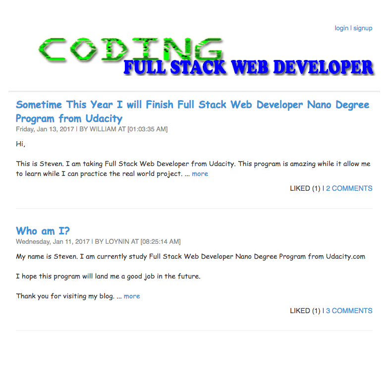

My Information
Self-motivated autodidact who understands how to find the necessary solutions to emerging problems. A conscientious and hardworking team player seeking to leverage Web Application Development skills such as JavaScript, HTML, CSS, Node, React, MySQL, Express, Babel, Webpack, and Postgres.
| DAY-TO-DAY COMFORT | EXPERIENCE WITH |
|
|
Project Experiences
|  | October 2018
|
|  | October 2016
|
|  | November 2016
|
Education
Udacity Nanodegree, Full Stack Web Developer July 2018 In this Nanodegree program, I had learned how to build and manage relational databases to store and handle application data, and build powerful server-side applications to serve that data to any type of client-side application. |
Colorado Technical University Business Administration B.S - Concentrate in Information Technology Febuary 2007 In this information technology degree, I have established a strong foundation in the information technology areas of programming, systems administration, security, architecture, databases and ethics. |
Contact
Steven Loy Tel: (562) 666-2888 E-Mail: loynin@gmail.com URL: loynin.com |